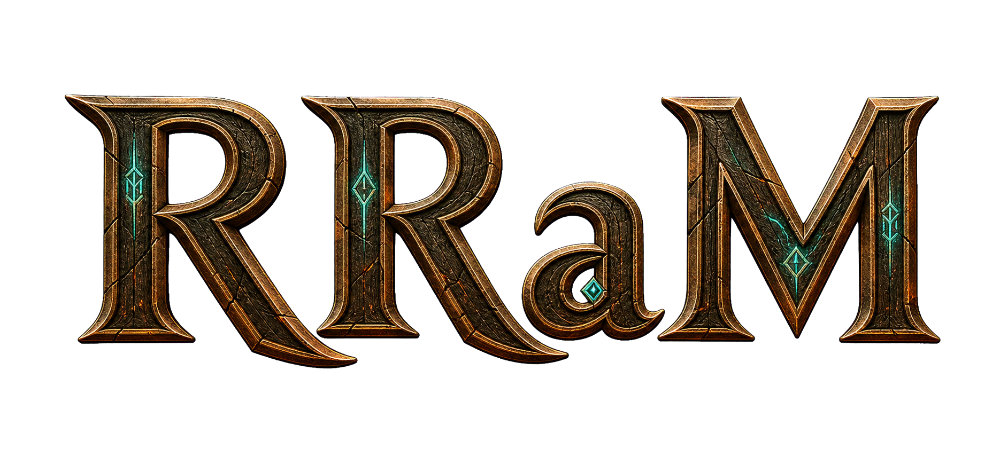

Загрузка поля…
— FPS
вызовов отрисовки: —
треугольников: —
загрузка: —
Нажмите на фигурку, затем на подсвеченную клетку.
Левая кнопка — тянуть карту, правая — наклон, колесо — зум к курсору.
Один палец — тянуть карту. Два пальца: развести — зум, вместе вверх-вниз — наклон.